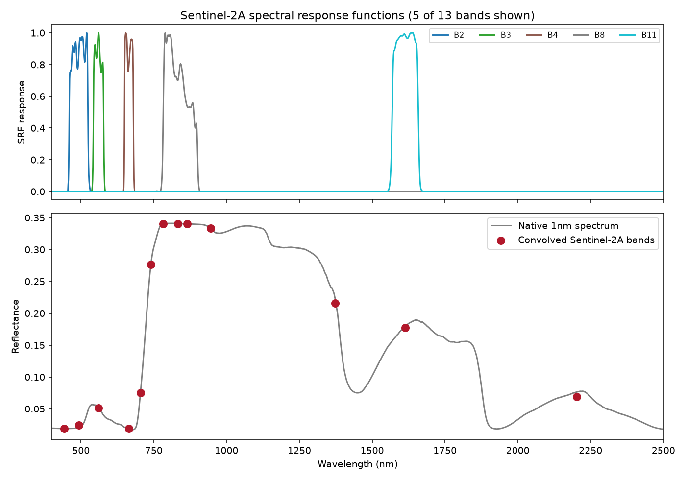

Python tutorials overview
A 20-chapter, Python-first learning path through toolsrtm and scopeinpython -- from a first simulation to a real Sentinel-2 trait map. Every chapter follows the same template (concept, runnable code, real output figure, scientific interpretation) and every number/figure below was produced by actually executing the documented code -- not written by hand. This page is the five-minute visual map; the Python documentation is where each chapter lives in full, and the API reference has exact function signatures.
Tip: use your browser's Print → Save as PDF to keep an offline copy of this page.
Chapters 01–06I. Fundamentals & RTM Simulation
A first simulation in minutes, what every trait means, then all four model families -- leaf, canopy, soil/atmosphere, and SCOPE -- each run, plotted, and interpreted on real output.


| # | Chapter | |
|---|---|---|
| 01 | Getting Started | |
| 02 | Parameters & Traits | |
| 03 | Leaf Radiative Transfer Models | |
| 04 | Canopy Radiative Transfer Models | |
| 05 | Soil & Atmosphere | |
| 06 | SCOPE |
Chapters 07–10II. From Simulation to Observations
How the models chain together into real pipelines, resampling onto real sensor bands (with the actual measured Sentinel-2A response curves, not idealized shapes), spectral indices, and a quantified, wavelength-resolved sensitivity analysis.



| # | Chapter | |
|---|---|---|
| 07 | Building RTM Workflows | |
| 08 | Sensor Simulation | |
| 09 | Spectral Indices | |
| 10 | Sensitivity Analysis |
Chapters 11–15III. From Spectra to Traits
Building a realistic (1000-row) training LUT, then three genuinely different ways to invert it: LUT matching, machine learning, and deep learning -- the DL chapter shows a real, successful fit (R²=0.95, healthy training/validation loss curves, early stopping), not a broken demo.


| # | Chapter | |
|---|---|---|
| 11 | LUT Generation | |
| 12 | LUT Inversion | |
| 13 | Machine-Learning Inversion | |
| 14 | Deep-Learning Inversion | |
| 15 | Choosing an Inversion Strategy |
Chapters 16–20IV. Real Earth Observation
Retrieving a live Sentinel-2 scene via STAC, preparing it properly (including a real, verified case where naive cloud masking fails and a working fix), applying a trained inversion model spatially, and a flagship end-to-end script from raw RTM parameters to a real, cross-checked trait map.


| # | Chapter | |
|---|---|---|
| 16 | Retrieving Real EO Data | |
| 17 | Preparing EO Observations | |
| 18 | Applying an Inversion Model Spatially | |
| 19 | Trait Maps & Uncertainty | |
| 20 | End-to-End Workflow (flagship) |
This is a curated visual subset of the full 20-chapter path -- the complete Python documentation has every chapter in full, each with runnable code, real output, and a scientific interpretation, and the toolsrtm / scopeinpython API references have exact function signatures. Using R? See the equivalent R tutorials overview.